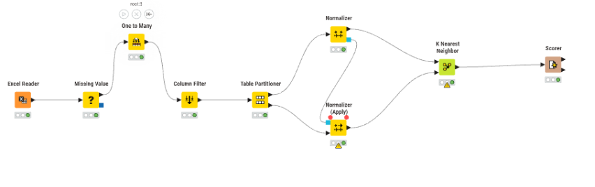
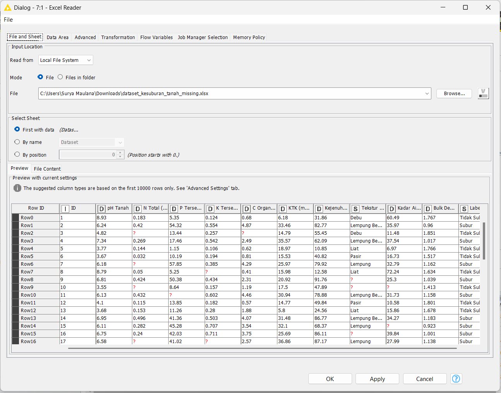
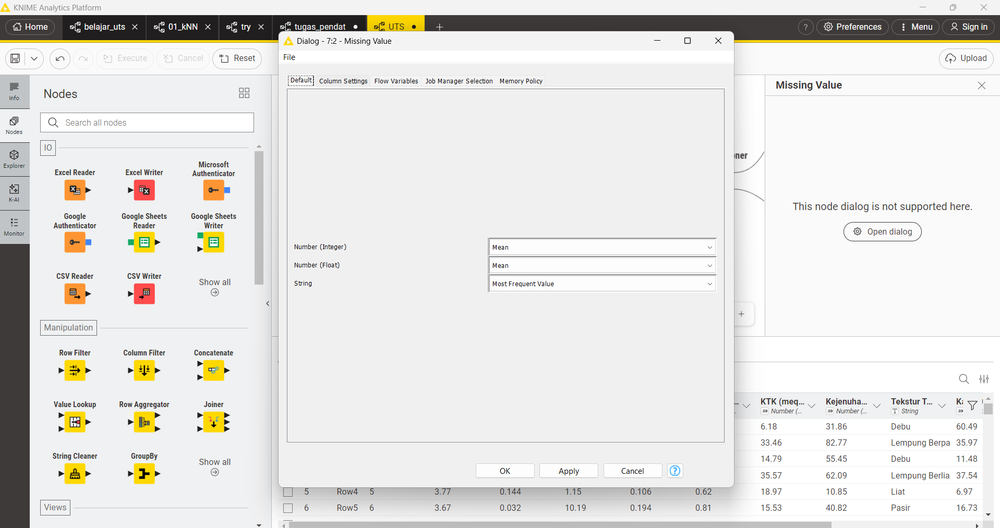
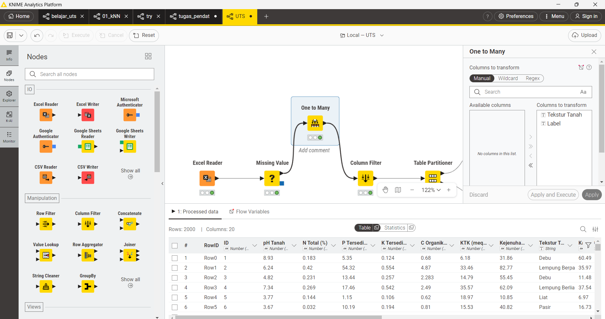
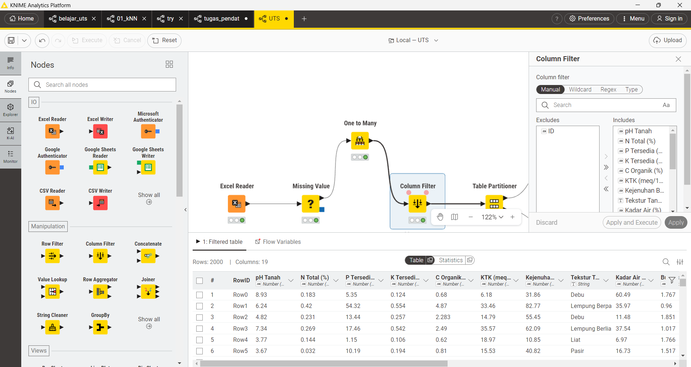
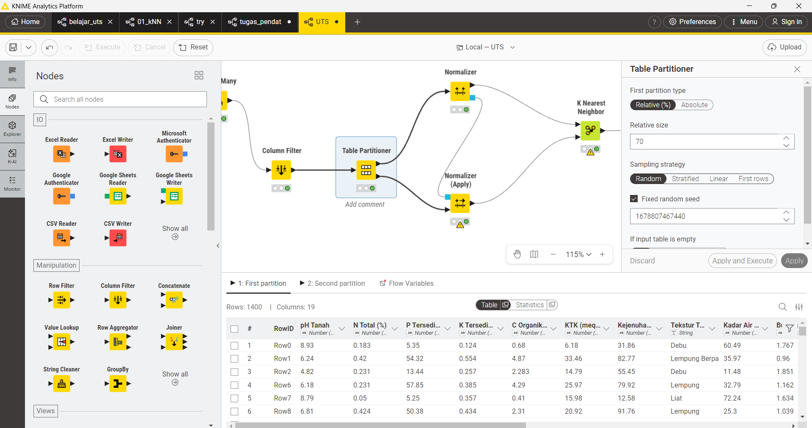
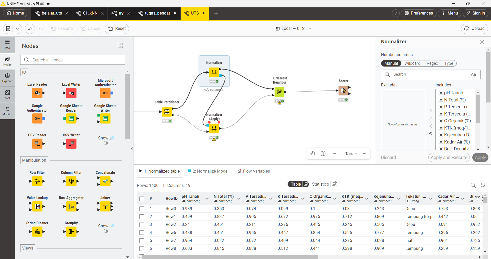
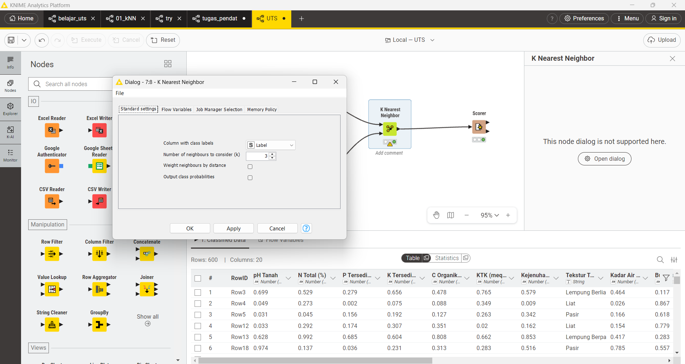
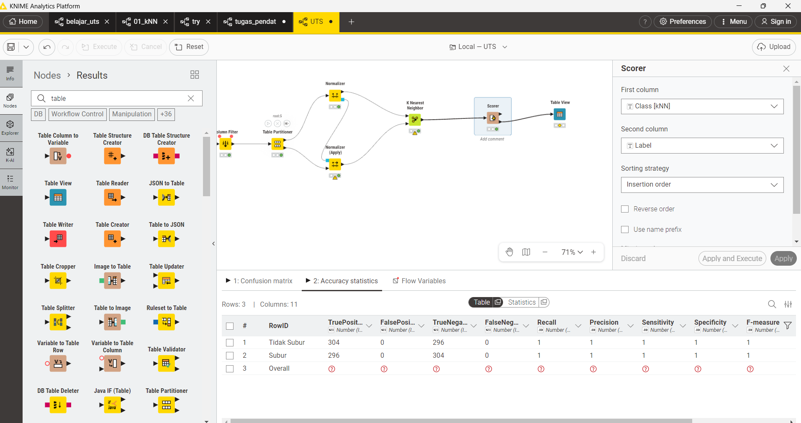

Analisis Data Kesuburan Tanah dengan KNN#
Deskripsi - Data Understanding#
Penelitian ini bertujuan untuk mengklasifikasikan tingkat kesuburan tanah ke dalam dua kategori, yaitu Subur dan Tidak Subur, menggunakan algoritma K-Nearest Neighbor (KNN). Dataset yang digunakan terdiri dari 2.000 sampel dengan 10 fitur agronomis serta mengandung missing values yang harus ditangani sebelum proses modeling.
Algoritma KNN dipilih karena merupakan metode supervised learning berbasis jarak yang sederhana namun efektif, khususnya pada data numerik. KNN mengklasifikasikan data baru berdasarkan kedekatannya terhadap data latih.

Alur ini mencerminkan tahapan data preprocessing → modeling → evaluasi dalam proses data mining.
1. Data Preprocessing#
1.1 Excel Reader#
Node ini digunakan untuk membaca dataset dari file Excel ke dalam lingkungan KNIME.

Alasan: Data harus dimuat terlebih dahulu sebelum dapat dianalisis. Tahap ini merupakan bagian dari data understanding dalam CRISP-DM.
1.2 Missing Value#
Node ini digunakan untuk menangani nilai yang hilang (missing values).
Metode yang digunakan:
Numerik → Mean Kategorikal → Most Frequent
Penjelasan:
Untuk data numerik, nilai kosong diganti dengan rata-rata:
Metode ini menjaga distribusi data tetap stabil.
Untuk data kategorikal, digunakan nilai yang paling sering muncul (mode) karena dianggap paling representatif.

Alasan: KNN menggunakan perhitungan jarak. Jika ada nilai kosong, maka jarak tidak dapat dihitung secara valid.
1.3 One to Many#
Mengubah data kategorikal menjadi numerik.
Contoh:
Lempung → (1,0,0) Pasir → (0,1,0)

Alasan: KNN tidak dapat memproses data non-numerik karena menggunakan perhitungan jarak matematis.
1.4 Column Filter#
Menghapus kolom tidak penting seperti ID.

Alasan: Kolom ID tidak memiliki hubungan dengan target dan hanya berfungsi sebagai identitas. Jika digunakan, dapat mengganggu perhitungan jarak.
2. Pembagian Data#
Table Partitioner#
Dataset dibagi menjadi:
70% data training
30% data testing
Menggunakan:
Random sampling
Fixed random seed

Alasan:
Data training digunakan untuk membangun model
Data testing digunakan untuk mengevaluasi model
Fixed seed memastikan hasil dapat direproduksi
3. Normalisasi Data#
3.1 Normalizer (Training)#
Data dinormalisasi ke skala yang sama (misalnya 0–1).
Alasan: KNN menggunakan jarak Euclidean:
Rumus Euclidean Distance:#

3.2 Normalizer (Apply)#
Normalisasi yang sama diterapkan ke data testing.
Alasan: Data testing tidak boleh mempelajari parameter baru. Oleh karena itu, digunakan parameter dari data training.
4. Modeling (KNN)#
K-Nearest Neighbor
Parameter:
K=3
Label: Subur / Tidak Subur
Cara kerja: Model mencari 3 data terdekat berdasarkan jarak, kemudian menentukan kelas berdasarkan mayoritas.
Alasan pemilihan K:
K kecil → sensitif terhadap noise
K besar → terlalu general
K = 3 → kompromi terbaik

5. Evaluasi Model KNN#

Komponen Confusion Matrix#
TP (True Positive): Data Subur yang diprediksi Subur
TN (True Negative): Data Tidak Subur yang diprediksi Tidak Subur
FP (False Positive): Data Tidak Subur diprediksi Subur
FN (False Negative): Data Subur diprediksi Tidak Subur
5.1 Accuracy#
Penjelasan:#
Accuracy mengukur persentase seluruh prediksi yang benar dari total data.
Interpretasi:#
Jika accuracy tinggi, maka model secara umum memiliki performa yang baik.
Contoh:#
5.2 Precision#
Penjelasan:#
Precision menunjukkan seberapa tepat model dalam memprediksi kelas positif.
Interpretasi:#
Semakin tinggi precision, semakin sedikit kesalahan prediksi positif.
Contoh:#
5.3 Recall#
Penjelasan:#
Recall mengukur kemampuan model dalam menemukan semua data positif.
Interpretasi:#
Semakin tinggi recall, semakin sedikit data positif yang terlewat.
Contoh:#
5.4 F1-Score#
Penjelasan:#
F1-score merupakan kombinasi antara precision dan recall.
Interpretasi:#
Digunakan ketika ingin keseimbangan antara precision dan recall.
Contoh:#
6. Analisis Hasil#
Confusion Matrix#
Actual \ Prediksi |
Tidak Subur |
Subur |
|---|---|---|
Tidak Subur |
304 |
0 |
Subur |
0 |
296 |
Total data uji: [ 304 + 296 = 600 ]
Interpretasi Hasil#
Berdasarkan confusion matrix di atas, dapat dilihat bahwa:
Tidak terdapat False Positive (FP = 0)
Tidak terdapat False Negative (FN = 0)
Hal ini menunjukkan bahwa seluruh data uji berhasil diklasifikasikan dengan benar oleh model.
Evaluasi Metrik#
🔹 Accuracy#
[ Accuracy = \frac{TP + TN}{TP + TN + FP + FN} ]
[ Accuracy = \frac{304 + 296}{600} = 1.0 ]
🔹 Precision#
[ Precision = \frac{TP}{TP + FP} = \frac{296}{296} = 1.0 ]
🔹 Recall#
[ Recall = \frac{TP}{TP + FN} = \frac{296}{296} = 1.0 ]
🔹 F1-Score#
[ F1 = 2 \times \frac{Precision \times Recall}{Precision + Recall} = 1.0 ]
Analisis#
Model K-Nearest Neighbor (KNN) menunjukkan performa yang sangat baik dengan nilai semua metrik evaluasi sebesar 1.0. Hal ini mengindikasikan bahwa model mampu mengklasifikasikan seluruh data uji dengan benar tanpa kesalahan.
Keberhasilan ini kemungkinan disebabkan oleh:
Fitur dalam dataset memiliki pola yang jelas dan tidak saling tumpang tindih
Proses preprocessing yang baik, seperti normalisasi dan penanganan missing values
Distribusi data yang seimbang antara kelas Subur dan Tidak Subur
Kesimpulan#
Model KNN efektif dalam mengklasifikasikan tingkat kesuburan tanah pada dataset ini. Namun, untuk memastikan keandalan model, disarankan untuk melakukan pengujian tambahan seperti cross-validation atau menggunakan dataset lain.